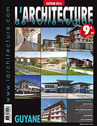

N°276
Normandie-Bretagne
À l’occasion de la publication d’un livre chez Taschen, la capitale lombarde rompt la glace de ses façades parfois austères pour dévoiler le faste qu’elles dissimulent. Entre marqueterie de marbre et lustres monumentaux, signés Giò Ponti ou Luigi Caccia Dominioni.
Partenaires :
AGENCEMENT, MOBILIER, MÉTIERS D'ART, DÉCORATION, CHEMINEES ATRE ET LOGIS (57) EURESCO (69) SIMON AGENCEMENT (88)